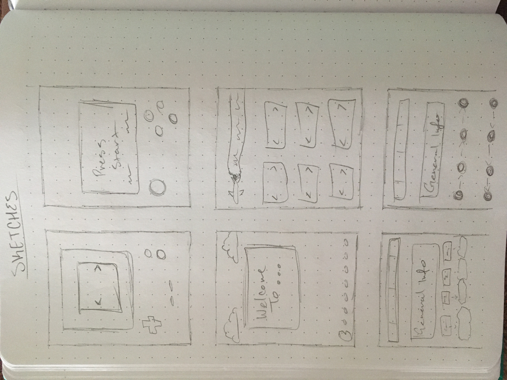
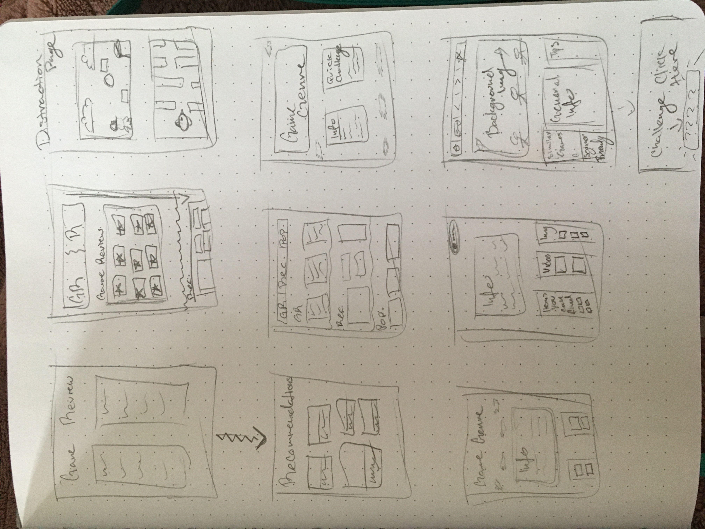

Challenge For Today
Todays big idea for Lab 20 is something to do with our Final Project.
For this lab, all we had to do was to work individually.
We had to put our creativity to test and do a few sketches,
creating a series of prototype designs for our teams project site.
Problems
For this lab, I didn't really ran into any problems. The only
difficult part I ran into was figuring out how to start off with my
sketches. Trying to sketch 15 different ideas was pretty difficult,
but at the end of the day, I was able to come up with a few
different ideas. Keep in mind, these are just quick sketches which
can help my teammates get an idea of my take in how the site can
look like.
My Results

